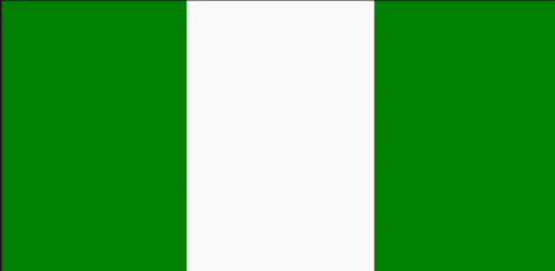

Okeke Daniel
About Me
Hello! My name is Okeke Daniel. I was born in Nigeria. I am currently working as a Teacher. My children are my world and I love spending time with them. I love to travel and I love to learn new things.
🇳🇬 I'm currently located in Nigeria, and I'm pursuing my education in web development to build a career in technology. Nigeria has a growing tech ecosystem, and I'm excited to contribute to the digital transformation happening across Africa.
Nigeria
Nigeria is the most populous country in Africa and is located in West Africa. It is home to over 200 million people and has more than 250 ethnic groups. The country is best known for its oil reserves, Nollywood film industry, diverse cultures, and vibrant music scene including Afrobeats.
Nigeria gained independence from British colonial rule in 1960 and has since become a major economic power in Africa. The country is known for its entrepreneurial spirit and rapidly growing technology sector, particularly in Lagos and Abuja.
Web Development Resources
Essential resources for web development that I use regularly:
- MDN Web Docs - Comprehensive documentation for HTML, CSS, and JavaScript
- W3Schools - Interactive tutorials and examples
- CSS Tricks - CSS techniques and best practices
- GitHub - Version control and project hosting
- VS Code - My preferred code editor with extensions
- Udemy - Online courses for skill development
- Image Placeholder - Quick placeholder images for development
These tools form the foundation of my web development workflow and help me create better, more accessible websites.